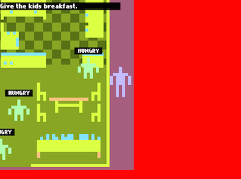

The Angst Affairs #12
Subscribe!

————————————————
From: Pippin
Oct 15, 2014
————————————————
Hi Teddy,
Argh, it’s Wednesday and I was supposed to email you on Thursday. Sorry! There was actually no reason other than that I didn’t write “Angst to Teddy” on my Things to do list and thus it never registered solidly with me enough. Even in this one small scenario I find myself thinking of that Kickstarter problem where developers end up feeling guilty (and even being hounded) for showing evidence that they’re doing anything except what they’re “meant” to be doing. So I probably wrote tweets on Monday but not this email, evidence of a horrible, rotting soul.
I think I maybe didn’t hear from you this last week – unless you travel back in time and I did hear from you, in which case, I totally did! I liked that thing you said! (I have got to imagine you are very, very busy indeed with Big Real Projects!)
On my end – Jostle Parent is actually coming along. Some of the progress has been refactoring stuff, mostly to handle the different kinds of states that a child can be in – enumerated out it’s currently PAUSED, NORMAL, HUNGRY, CHOKING, ELECTROCUTION, KNOCKED_DOWN, and DEAD. A story in an enum. Beyond that, though, I’ve added a few interface things and even a graveyard! I even did some of this while teaching a class on digital prototyping. How appropriate!
Now, pictures ensue, and no more words! As we discussed!
Bye for now!
-Pippin
————————————————
From: Teddy
Oct 18, 2014
————————————————
Wow, the graveyard. Another milestone in the story of Jostle Parent. Well done, combining your teaching with development! That’s a most excellent and impressive use of time.
Hm, not much to say on projects. Hyper Light is going very well as always. I’m about to do an intensive session to prep Kyoto Wild for some submissions and two events next month. Yikes! Oh, I also did IndieCade, gave a talk, ran a stage show, showed Hyper Light. So basically, it has been crazy. Here’s a picture of me speaking about game communities at City Hall in Culver City! Or rather, of me doing sound check…

In the interest of actually getting things done, I’m not going to pretend I have a screenshot to show, but will instead promise great things for next week!
Uneventfully,
-Teddy
————————————————
From: Pippin
Oct 27, 2014
————————————————
Hey Teddy,
Wow that picture of you in City Hall is cool. So noir! Make a game that looks like that maybe. Very much looking forward to seeing some pictures and hearing some sounds for your next update – I still think about that little boat from way back in the early Angsts. Also, speaking of early Angsts, did you ever name yourself? Sounds hard hard hard.
(And speaking of speaking of, the font I used for my name on my website? Helvetica. Tried and true. I’m also a big fan of Clear Sans at the moment, but it’d be a trial to get that working on the web.)
On my end, things are going fine. Nothing crazily new, mostly just wrestling with the beast that is the state system of the game and trying to get the game to go through the process of a kid dying properly (e.g. from death to notification to graveyard to menu). It’s getting there.
For now, here are three pictures that illustrate the main (surprising!) thing I’ve enjoyed about this game all taking place on one huge stage set…so that while testing I can hide from the kids kind of outside the game (though they also end up coming out themselves!).
This allowed me to make a couple of weird juxtapositions that I quite like. One of which is that the jail cell you end up in if you kill a kid yourself (by slamming them around – the game is currently very intolerant of this, which I think is appropriate in terms of emphasizing care).
And then, relatedly, the graveyard is also directly adjacent to your bedroom:
So you’re kind of surrounded by these tragic potentials as soon as you wake up, even though in the actual game you wouldn’t see that these things are right next to you. I like that the game is able to have that kind of spatial element…it’s something I’ve not played around with before and I can see a lot of potential in it that I’d like to explore in other setups.
That’s it!
– Pippin
————————————————
From: Pippin
Oct 21, 2014
————————————————
Hey Teddy,
Not a heck of a lot to say for myself this week. I succumbed to the siren song of refactoring (again!) and have been re-writing the code for the game to be more object-oriented and less public static variables absolutely everywhere. It’s helping in the sense that I now feel less overwhelmed by the game, but it’s not helping in the sense that now I have less of the game than I did last week. Here’s hoping it pays off?
What a boring email this is, yikes. I guess I can say that I’ve been enjoying my teaching over the last couple of weeks and today was particularly good. I’m teaching an introductory programming course for game designers with GameMaker, and it’s been really rewarding seeing the students come up with weird funny hacked versions of the games they make in the labs for their exercises. Reminds me of how fundamentally hilarious programming is – or at least can be – which is good.
But yeah, no images, really, because there’s less of the game than there was. Darn. I did listen to you speak on the GameChurch Podcast, by the way, which I really enjoyed (I’ll be on there in a few weeks I believe, ha ha). Seems a nice format, to me, and you in particular said some good words.
That’ll have to do – sorry I’m not more dynamic! Maybe next week?
-Pippin
————————————————
From: Teddy
Nov 2, 2014
————————————————
Hey Pippin!
Sorry I’ve been silent for a while now! I set my mind to making some progress on Kyoto Wild and moving that game forward. I’m still in the middle of the effort and really trying to get it off the ground in terms of becoming a real production. I’m not specifically sure what I mean by that, but the few things that come to mind are:
– I need to start a new LLC for the game and name a company (I’ve decided to keep my own name and avoid “renaming” myself)
– I need to form a team to get some help here and there!
– I need a business plan, a way to pay the team and myself. I’m growing less interested in long-term projects for which I’m not able to pay myself.
Anyway, here’s a screenshot of my latest Kyoto Wild level! You can fall to into the river and drown now. Hooray! I’ve also finalized the four main player colors with the help of Ricky Linn, a graphic designer who I’m collaborating with.
I had one thought reading your latest about Jostle Parent – you mention that the game is very intolerant or strict about how it reacts to forcibly killing a child, throwing you in jail. I wonder whether that will come across as the game being truly intolerant. One one hand, you’re explicitly punishing this action in-fiction. However on a gameplay level, you’re rewarding it in a manner. Players come to a game and are eager to poke at its systems, to see it react and feel engaged with it. Anything you build to respond to an action is acknowledging that action and, in a way, rewarding the player with content. I guess I’d just say be careful of striking a balance there. I know this is definitely something you’ll care about communicating clearly.
Until next time!
-Teddy
.jpg)
{kind=link}
{kind=link}
{kind=link}
{kind=link}
{kind=link}
{kind=link}